kubectl get job eval shows Failed, with the
Job log (also our F3 evaluation Job log).
C/C1-gate-fail.txtCS4032 Assignment 03 (RAGOps), Fall 2026. Team:
Taimoor Shaukat (24I-3015) and Muhammad Bilal
Tahir (24I-3166). Repository: https://github.com/IfBilal/Rahbar · submitted commit:
«MEASURE: git SHA» · all numbers come from runs on one
machine (a CPU-only laptop, docs/a3-evidence/host.md).
We added the RAGOps layer of the reference paper (Xu et al., 2026) to
our Assignment-02 pipeline RAHBAR (FAST-NUCES rules, answers with
citations, abstains when the documents do not cover a question). It now
has a verification and incremental-update lifecycle for the data
(Batch A: nine public documents, 281 pages
(verify-calibration.md); Batch B: thirteen
fictional files with planted problems), a three-level offline test
suite, a configurable release gate, traces and metrics for every query,
a coverage check against live queries, and a controlled release on
Kubernetes. Ingestion and evaluation are Jobs; data, traces and results
are on PersistentVolumeClaims; thresholds are a ConfigMap.
| Figure-3 stage | What our pipeline does | File | What is missing |
|---|---|---|---|
| Ingest | An inbox on the ragops-data volume; adds, changes and
removals are detected against a ledger; PDF, HTML, Markdown and text
extraction with OCR for scans |
indexer/pipeline/catalog.py, extract.py,
run.py |
No webhook or change-data-capture (the CronJob ingest
runs weekly, 0 3 * * 0, or on demand); formats beyond those
four; two Batch-A PDFs have no text layer and rely on OCR |
| Verify | Four checks per document (quality, completeness, recency, uniqueness) with a reason code; failures go to quarantine; one report per run | verify.py, report.py |
No consistency check across documents; malicious content is not
detectable here (B08 passed all four checks,
A1-verification-report-batch-b.txt) |
| Update data lake | Verified versions on the PVC, superseded versions archived and restorable, deletions recorded, a versioned ledger | lake.py, ledger.py,
ops.py |
No access-control metadata |
| Update retrieval sources | Chunk-level incremental update: 0 embeddings when nothing changed,
changed document replaces only its chunks, deletion leaves no orphans,
superseded flag in metadata, revision in a registry |
incremental.py, store.py,
index.py |
A change of embedding model or chunking is a full rebuild of a new
collection (532 chunks took 637 s for all-minilm, 675 s for mxbai, 1406
s for llama3.2:1b; C0-build-index-*.txt) |
| Offline testing | Golden set (30) and a three-level suite (module, component, end-to-end), seeds, run twice, one command; gate over ConfigMap thresholds | ragops/suite/, ragops/gate/ |
Public benchmarks; a larger golden set (30; 26 usable before Batch B); a stronger judge than the 3B generator; judge-vs-human agreement not measured |
| Live testing | A candidate Deployment on its own collection, the same suite against
it, a gated rolling release with kubectl rollout undo;
traces and a summary over a time window |
k8s/candidate.yaml,
scripts/ragops/release.sh, ragops/trace/ |
No A/B traffic split (candidate is tested by the suite, not by users); no alerting; the retrieval-stage rail only neutralises text, it never excludes a chunk |
| Check coverage | Embedding similarity between live queries and golden questions; share against a calibrated threshold; uncovered topics; exit code | ragops/coverage/coverage.py |
Retrieval-level and generation-level coverage; the threshold is tied to nomic-embed-text; the 42 calibration pairs were labelled by Claude Code and not yet spot-checked by a member |
| Quality | What we measure | Our threshold (config) | Evidence |
|---|---|---|---|
| Adaptability | Chunks embedded when the corpus did not change, and when one document changed | Unchanged run embeds 0 chunks; a changed document replaces only its own chunks (design limit, no config value) | A2-unchanged-rerun.txt (0),
A5-changed-and-deleted-document.txt |
| Monitorability | Five gate rules per candidate; coverage share of live queries;
/metrics |
gate.yaml: recall@5 drop <= 0.02, abstention >=
baseline, citation validity >= 0.95, faithfulness >= 0.89, p95
<= 225 s; coverage.yaml: tau 0.6448, min_share 0.85 |
*.decision.json, E1-coverage-before.txt,
F4-metrics-port-forward.txt |
| Observability | One trace per /api/ask: release, embedding version,
collection revision, ranked chunks, prompt hash, latencies; summary over
a release |
No alert threshold (we have no alerting); the summary is read by hand | D3-trace-summary.txt,
D5-root-cause-g025-trace.txt |
| Traceability | A trace id rebuilds the prompt: hash check, every retrieved chunk found in the lake snapshot | Pass required: “prompt hash verified” and all chunks “rebuilt from snapshot” | D5-root-cause-g025-trace.txt,
F6-trace-after-undo.txt |
| Reliability | Run-to-run difference of quality metrics (two baselines); non-200 responses during a release | Quality |delta| 0 expected (seeded, temperature 0); 0 non-200 during
rollout (RollingUpdate maxUnavailable: 0) |
B2-stochasticity.txt (0.0000),
F5-zero-downtime.txt (47/47),
F6-bad-release-and-undo.txt (150/150) |
Everything ran on one CPU-only laptop, one heavy job at a time
(host.md). Golden set: 30 questions (16 answerable, 6
unanswerable, 8 hard; 19 human, 11 synthetic), frozen before any run
(golden: freeze v1). The 11 synthetic ones (g020-g030) were
checked against their pages by Claude Code (data-review.md)
and then read by Taimoor only (synthetic-spot-check.md);
Bilal has not reviewed them. g027-g030 need Batch B, so
Parts B and C evaluate 26 questions (20 answerable or hard, 6
unanswerable).
| Run | New / quarantined / unchanged | Chunks embedded | Time | Source |
|---|---|---|---|---|
| Batch A first ingest | 9 / 0 / 0 (2023 rules archived) | 532 | 561 s | F2-ingest-first-run.txt |
| Batch A unchanged re-run | 0 / 0 / 9 | 0 | 0.06 s | A2-unchanged-rerun.txt |
| Batch B (12 files) | 6 / 6 / 9, 1 archived | 52 (26 in rahbar, 26 in
rahbar-cand-minilm) |
42 s | A1-sync-batch-b.txt |
| B13 delivered later | 0 / 1 / 15 | 0 | 0.8 s | A1b-sync-late-b13.txt |
| Restore 2022 version, then back | revision r0004 to r0006, 558 chunks | 0 each step | n/a | A4-restore-rollback-demo.txt |
| New demo document, then 2 sentences edited | 5 chunks; the edit replaces those 5 | 10, then 10 (10 deleted); other 558 untouched | n/a | A5-changed-and-deleted-document.txt |
| Demo document deleted | 10 removed; Chroma 558 = ledger 558, orphans none | 0 | n/a | A5-changed-and-deleted-document.txt |
Batch B (A1-verification-report-batch-b.txt,
A1b-verification-report-b13.txt): 6 quarantined, 6
accepted, 1 archived, as corpus/batch-b/README.md predicted
before the run. Failures by check: completeness 4, uniqueness 3,
quality 1, recency 1.
| File | Planted problem | Observed | Caught |
|---|---|---|---|
B01 Student_Handbook_Copy.pdf |
exact duplicate | U-EXACT-DUP, quarantined |
yes |
B02 grading-page-backup.html |
exact duplicate | uniqueness FAIL and completeness FAIL
(C-MISSING-DATE-VERSION, the reason the report prints) |
yes |
B03 library-lending-regulations.md |
near-duplicate of B09 | U-NEAR-DUP |
yes |
B04 lab-safety-notice.pdf |
corrupt PDF | Q-EXTRACT-FAIL (completeness also FAIL) |
yes |
B05 exam-schedule-policy-trunc.md |
truncated | C-TRUNCATED |
yes |
B06 untitled-notes.txt |
no title, date, version | C-MISSING-TITLE |
yes |
B07 faculty-entrepreneurship-policy-2026.md |
newer version | accepted; 2022 version archived (R-SUPERSEDED-BY) |
yes |
B08 campus-parking-policy.md |
injected instruction | accepted, all four PASS | no |
| B09-B12 | clean new documents | accepted | n/a |
B13 ...policy-2019.md (later run) |
older version arrives late | R-NEWER-EXISTS, quarantined |
yes |
We expected completeness 3; it was 4 because B02, planted as a
duplicate, also lacks a date. A bug found on the cluster: 400-word
document-vector windows overflowed the embedding context on the real
corpus; fixed to 250 words (commit 1e9d4d2). Batch B went
into the live index in Part A (A1-sync-batch-b.txt), after
every Part B and C run, so E3 compares corpus A with corpus A plus
B.
| Level | Metric | Run 1 | Run 2 | N |
|---|---|---|---|---|
| module | paraphrase / unrelated mean cosine; gap | 0.823 / 0.497; 0.327 | same | 20 / 20 |
| module | embed ms per chunk (mean / p95) | 525 / 1435 | 882 / 2199 | |
| component | recall@3 / recall@5 | 0.775 / 0.800 | same | 20 |
| component | MRR / nDCG@5 | 0.725 / 0.727 | same | 20 |
| component | recall@5 with typos (delta) | 0.750 (-0.050) | same | 20 |
| endpoint | faithfulness judge / proxy | 0.947 (18 of 19) / 1.000 | same | 20 |
| endpoint | abstention correctness; false abstention | 1.000; 0.050 | same | 6; 20 |
| endpoint | citation validity | 1.000 | same | 19 |
| endpoint | latency p50 / p95 (s) | 99.6 / 153.0 | 131.0 / 177.3 | 26 |
Source: 20261124T174636Z_baseline.md (run 1),
20261125T034256Z_baseline.md (run 2). Stochasticity
(B2-stochasticity.txt): every quality metric is identical
in both runs (|delta| 0.0000); only the six wall-clock rows differ. The
two runs used different commits (3f22101,
26c05d9). A first attempt at run 2 was stalled by a laptop
suspend and discarded (run2-stalled-by-suspend.md).
Judge-vs-human agreement: «MEASURE: hand labels, n, agreement,
kappa».
Thresholds were derived from the two baselines and committed before
any candidate was built (commit 7c93420, 10:04; the first
candidate commit 6eda32c, 10:45): faithfulness_min 0.89 =
0.9474 - 1/19 (one more unsupported answer), rounded down; p95 225 s =
worst baseline p95 177.3 x 1.25, rounded up (gate.yaml).
Candidates and calibrated floors:
ragops/config/candidates/, C0-floor-*.txt. The
module level of cand-minilm below is from
C1-module-minilm-corrected.txt; the module rows in
20261125T054522Z_cand-minilm.md are invalid (the suite
embedded with the wrong model; found and fixed, commit
9b6b47b).
| Metric (gate limit) | Baseline | cand-minilm | cand-llama1b | cand-mxbai |
|---|---|---|---|---|
| recall@5 (>= 0.78) | 0.800 | 0.800 PASS | 0.600 FAIL | 0.850 PASS |
| abstention correctness (>= 1.000) | 1.000 | 1.000 PASS | 1.000 PASS | 0.833 FAIL |
| citation validity (>= 0.95) | 1.000 | 1.000 PASS | 1.000 PASS | 1.000 PASS |
| faithfulness (>= 0.89) | 0.947 | 0.944 PASS | 0.857 FAIL | 0.947 PASS |
| p95 latency, s (<= 225) | 153.0 / 177.3 | 175.3 PASS | 87.8 PASS | 190.9 PASS |
| not gated: recall@3; MRR | 0.775; 0.725 | 0.775; 0.742 | 0.450; 0.487 | 0.825; 0.700 |
| not gated: false abstention; typo recall@5 | 0.050; 0.750 | 0.100; 0.725 | 0.300; 0.475 | 0.050; 0.775 |
| module gap; embed ms/chunk | 0.327; 525 | 0.525; 58 | 0.272; 2156 | 0.406; 1052 |
| Our prediction before the run | n/a | fail | fail | pass |
| Gate, decision | n/a | PASS, RELEASE | FAIL, REJECT | FAIL, REJECT |
Sources: 20261125T054522Z_cand-minilm,
...074817Z_cand-llama1b, ...083132Z_cand-mxbai
(.decision.json and .md). Baseline latency is
run 1 / run 2; the gate used run 1.
cand-minilm (all-minilm), RELEASE. All five rules
pass; we had predicted a fail. recall@5 is unchanged, embedding is about
9 times faster per chunk (58 vs 525 ms) and the module gap is the
largest (0.525). Against that: false abstention doubled (0.05 to 0.10,
one more of 20 questions refused; not gated), typo recall fell by 0.075,
and 74 of 532 chunks were embedded from a halved text because the
model’s context is short (C0-build-index-minilm.txt).
Released as R3-minilm (F5-release-rollout.txt), then rolled
back to R1-nomic to keep one variable for E3
(F6-return-to-baseline.txt).
cand-llama1b (llama3.2:1b as embedder), REJECT.
Built as the deliberately bad candidate: recall@5 0.80 to 0.60,
faithfulness 0.857 < 0.89. release.sh refused and the
revision did not change (F3-release-refused.txt).
cand-mxbai (mxbai-embed-large), REJECT. Best recall
(@5 0.85, @3 0.825), but abstention 0.833
against 1.000: g022 (“student visa for Canada”) was answered, with a
“cannot apply” text and a citation, instead of abstaining (its top-1
score 0.5476 is above our floor 0.50, C0-floor-mxbai.txt).
We had predicted a pass and did not tune the floor afterwards.
Trace d08cce5a... (g025, baseline run 1;
D5-root-cause-g025-trace.txt): release R1-nomic,
nomic-embed-text 0a109f422b47, collection
rahbar @ r0001, 5 ranked chunks (top score 0.6926), prompt
hash 1ce583b0821c, status abstained, total 112 021 ms
(retrieve 117.5, generate 111 903); prompt hash and 3 chunks verified.
Summary over 62 /api/ask traces of R1-nomic
(D3-trace-summary.txt): ok 48, abstained 14 (0.2258;
includes the unanswerable test questions); top-1 similarity min 0.5731,
p10 0.6291, p50 0.7692, p90 0.8741, max 0.8906; latency p50 / p95: total
110.9 / 173.6 s, retrieve 15.2 / 161.3 ms; cache hit 0.0; guardrail
actions 0. D1 (full record): the capture command failed (exit 1, no
JSON, D1-trace-record.txt); trace.show is the
readable record. D4 (B08 neutralised at query time): «MEASURE: the
parking-policy question and its rail action in the trace».
D5 root cause, abstained answer g025, from its trace
only (D5-root-cause.md):
status=abstained,
abstain_reason=model_declined: retrieval worked, the model
declined.superseded_filter: true, no history
flag: the archived 2023 version was excluded by metadata.| Item | Value | Source |
|---|---|---|
| Calibration | tau 0.6448 = best F1 on 42 pairs (precision 0.68, recall 0.944); labels by Claude Code, not yet spot-checked by a member; conservative tau 0.79: precision 1.0, recall 0.444 | E0-calibrate.txt, coverage.yaml |
| min_share | 0.85, the paper’s example | coverage.yaml |
| Coverage before | 42 live queries, 25 covered, share 0.595 (in-domain
0.750, out-of-domain 0.286); COVERAGE GAP, Job Failed |
E1-coverage-before.txt |
| Sensitivity | tau -0.05 gives 0.810, tau +0.05 gives 0.405; TF-IDF cross-check 0.024 | E1-coverage-before.txt |
| Uncovered | 17 queries in 13 topic groups; groups of 2: late evening bus, financial aid, clubs using classrooms, exam retake | E1-coverage-before.txt |
| E3 drift (corpus A against A plus B, common and new subsets) | «MEASURE: E3 suite run on the live index with Batch B» | |
| E4 new questions and coverage after | «MEASURE: E4 questions added to the golden set and the coverage re-run» |
| Step | Result | Source |
|---|---|---|
| S1 gate failed | release.sh cand-llama1b refused, exit 1, deployment
revision still 1 |
F3-release-refused.txt |
| S2 gate passed | R3-minilm rolled out (3 replicas, one at a time); 47 of 47 probe requests 200 (09:47:20 to 09:47:43) | F5-release-rollout.txt,
F5-zero-downtime.txt |
| S3 bad release | collection name typo: the new pod never Ready,
rollout status timed out (exit 1); the 3 old pods kept
serving, 150 of 150 requests 200;
rollout undo succeeded |
F6-bad-release-and-undo.txt |
| Trace after undo | release R3-minilm, all-minilm 1b226e2802db, collection
rahbar-cand-minilm @ r0001 |
F6-trace-after-undo.txt |
| Back to baseline | rollout undo --to-revision=1: R1-nomic,
0a109f422b47, floor 0.60 |
F6-return-to-baseline.txt |
| Namespace; metrics | PVCs ragops-data, ragops-traces,
ragops-results, data-chroma-0 Bound;
/metrics by port-forward |
F1-namespace-overview.txt,
F4-metrics-port-forward.txt |
| Resource table (peak, request, limit) | «MEASURE: kubectl top summary per Job and the final requests and limits» | |
| Gate verdict changing after a ConfigMap edit | «MEASURE: edit of ConfigMap ragops-gate and the Job re-run» | |
| NetworkPolicy matrix | «MEASURE: nc/wget matrix evidence» |
(a) Completeness caught the most (4: B02, B04, B05,
B06), then uniqueness (3), quality (1), recency (1)
(A1-verification-report-batch-b.txt). We did not catch
B08, the injected instruction in a valid policy: it
passed all four checks and was indexed. An ingest-time injection scan,
source trust or human review would catch it; until then the retrieval
rail is the only defence, and we have not yet shown it working (D4
above).
(b) Yes, twice. mxbai: module gap
0.406 (baseline 0.327) and recall@5 0.85 (baseline 0.80), yet endpoint
abstention fell to 0.833 because g022 passed our floor and the model
answered (cand-mxbai.decision.json).
minilm: the best module gap (0.525 vs 0.327) and 9
times faster embedding, but end-to-end quality did not improve: recall@5
0.800 both, false abstention 0.05 to 0.10. Module-level separation did
not predict abstention behaviour.
(c) We archived: the 2022 policy and the 2023 rules
are flagged superseded and kept; restoring re-embeds 0
chunks (A4-restore-rollback-demo.txt). We deleted only a
throwaway demo document (A5, no orphans). Deleting an old
version would remove the rollback (restore needs the archived chunks)
and version questions. D5 shows what archiving costs: the question
naming “the 2023 rules” was filtered to 2026 text and abstained. That
deleting breaks old trace rebuilds (the tool reads the lake snapshot) is
our reading of the code, not tested.
(d) Least trusted: judge
faithfulness (a 3B model judging 3B answers; 18 of 19
supported, one answer is 0.053; agreement with humans not measured) and
the coverage share: it measures similarity of wording,
counts 4 of 14 out-of-domain queries as covered, and moves 0.810 to
0.405 for tau -0.05 to +0.05 (E1-coverage-before.txt).
Latency is also noisy: baseline p95 153.0 vs 177.3 s on the same
code.
(e) Hardest was live testing: the paper’s A/B or
shadow traffic needs users. We replaced it with a candidate collection
tested by the same suite plus a gated rolling release. Three-level
testing on a CPU laptop took 42 to 75 minutes per candidate
(C1-gate-fail.txt, C1b-gate-fail-mxbai.txt),
so the component level uses /api/retrieve and typos instead
of distractor documents. We have no consistency check (versions are
archived, not reconciled), and the coverage threshold is a calibrated
cosine, which the paper does not give.
(f) (k8s/README.md) Job and
CronJob ingest (Forbid) are the only
writer to Chroma, backed by a lock file on the PVC, a NetworkPolicy that
lets only the indexer and candidate reach Chroma, and a boundary test;
Chroma itself has no authentication, so Kubernetes alone does not make
the API read-only. PVC ragops-data holds
lake, archive and ledger (the eval Job mounts it read-only);
StatefulSet chroma holds the index;
PVC ragops-traces the traces;
ConfigMap ragops-gate the thresholds;
Job eval is the gate (exit code =
verdict); Deployment api-candidate is the
isolated candidate; Deployment api with
RollingUpdate and kubectl rollout undo is release and
rollback.
| Area | Taimoor Shaukat (24I-3015, T361) |
Muhammad Bilal Tahir (24I-3166, IfBilal) |
|---|---|---|
| Part A | Cluster runs and evidence A0-A5; 8 commits to
indexer/pipeline (e.g. window size) |
Pipeline core: ledger, lake, verification, incremental sync, Batch B
fixtures (ff30bfc, 2dd29c8) |
| Part B | Data review, golden freeze, baseline x2, review of 11 synthetic questions | Suite code (ragops/suite), first drafts of the golden
set |
| Part C | Gate thresholds, candidates, floors, runs, release.sh,
module-level fix |
Gate code (ragops/gate) |
| Part D | Trace summary and /metrics additions, D3 and D5
evidence |
API traces, /api/retrieve, trace tools |
| Part E | Calibration of tau, coverage Job and run | Coverage code, pair and live-query drafts |
| Part F | Manifests, Jobs, scripts, CI changes, evidence capture (21 of 22
k8s/ commits) |
Planning documents docs/a3-ragops/ (7 commits) |
| Report | Draft of this report | Not yet reviewed |
git shortlog -sn --no-merges (whole history, including
Assignments 01 and 02): T361 140, IfBilal 43. The table follows commit
authors; code in Bilal’s commits was written with AI assistance (see
below). Not done or weak: Bilal has not reviewed PR #24
or the synthetic questions; no GPU, so latencies are CPU-only; the trace
lacks dense and reranked order, per-stage timings and
origin_trace_id for cache hits, and the rail only
neutralises; judge hand labels are not written.
AI statement. We used an AI chat assistant and
Claude Code for the plan, the pipeline, suite, gate, coverage and trace
code, the Kubernetes objects and scripts, the data review and the draft
of this report (docs/AI-USAGE.md, Assignment 03 section).
Every number here comes from our own runs on our minikube, with raw
output in docs/a3-evidence/; the AI produced no metric,
trace or screenshot. Our review is incomplete: the 42 coverage pairs
were labelled by Claude Code, and only Taimoor read the synthetic
questions.
Each image is rendered from the raw transcript named in its caption
(the command line and exit code are in the image). Paths are under
docs/a3-evidence/.
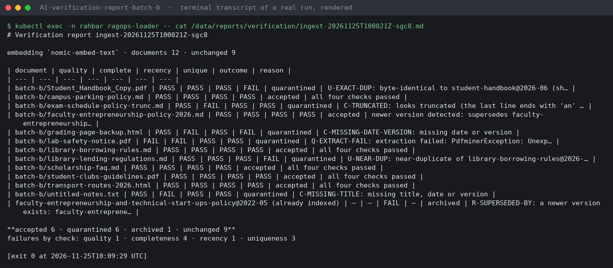
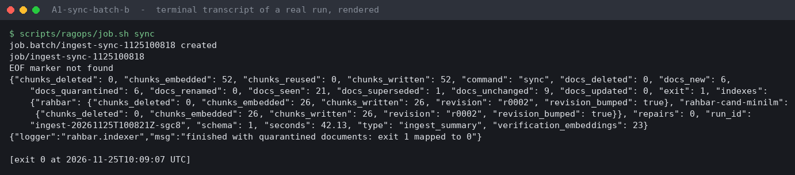
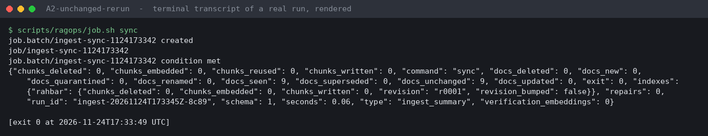
B1 Evaluation summary with all three levels:
«MEASURE: screenshot pending» (the summary text is
eval/results/20261124T174636Z_baseline.md).
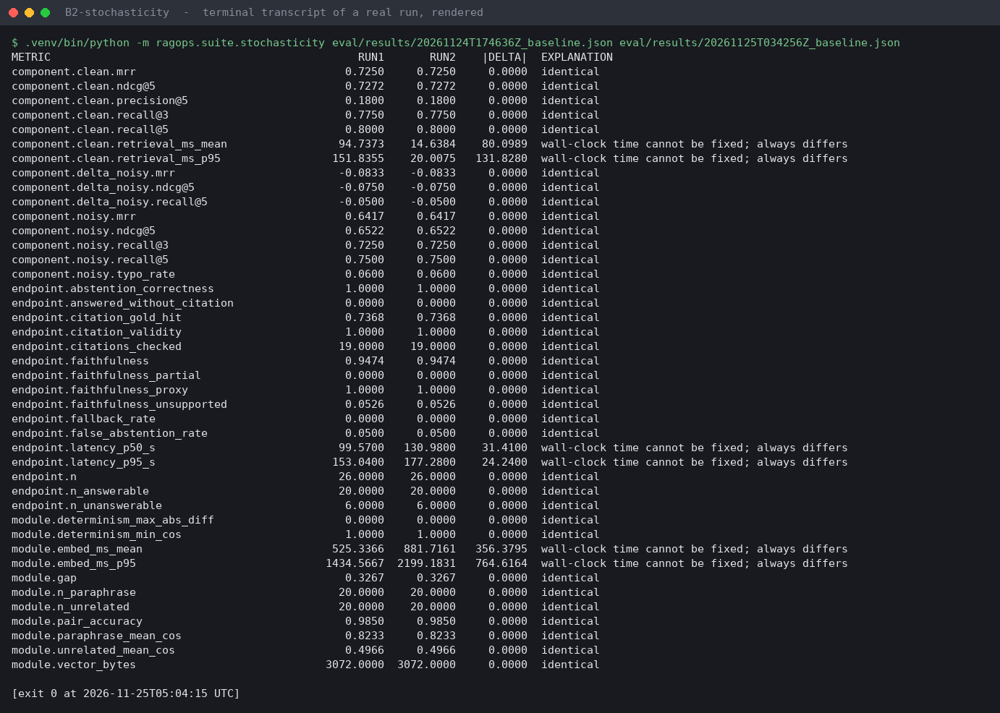

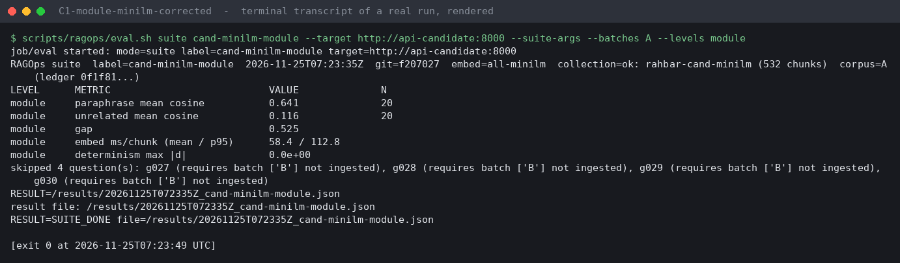
C2 Gate passing (cand-minilm): «MEASURE: screenshot
pending» (the decision is
eval/results/20261125T054522Z_cand-minilm.decision.json;
the release dry run that reads it is
F/F3-release-dry-run.txt).
D1 One full trace record: «MEASURE: screenshot
pending» (the capture in D/D1-trace-record.txt failed with
exit 1).
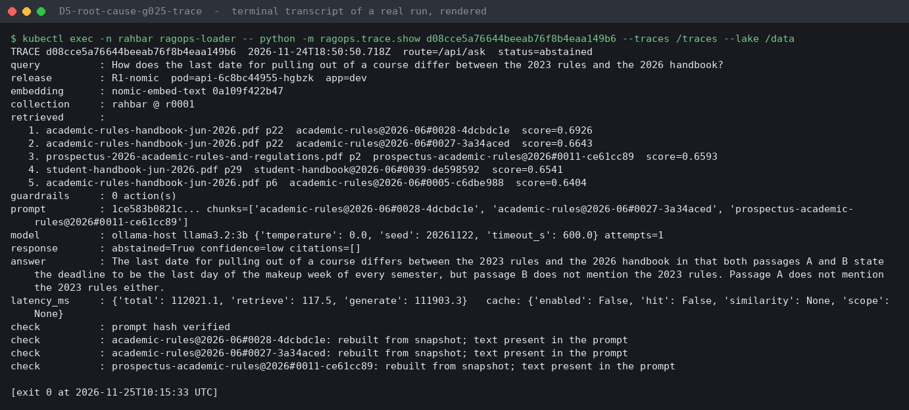
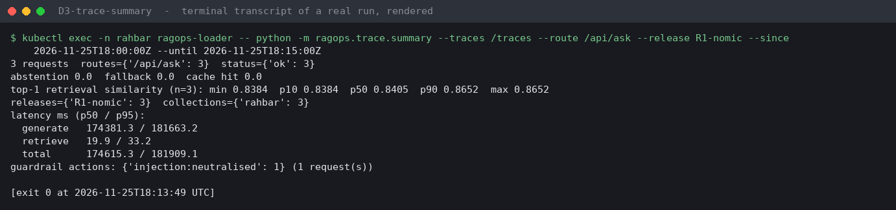

E2 Coverage after adding the new questions: «MEASURE: screenshot pending»

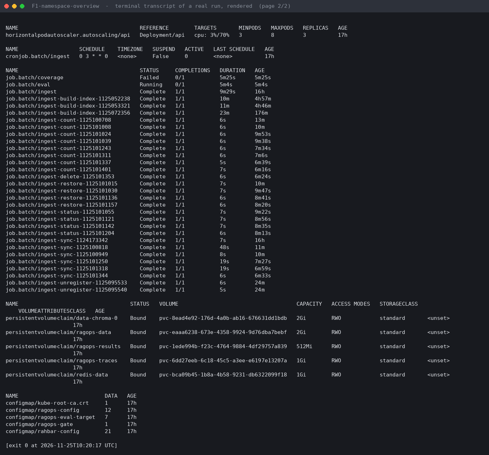
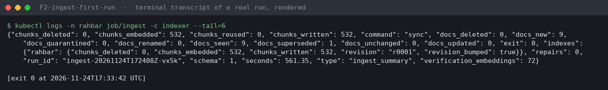
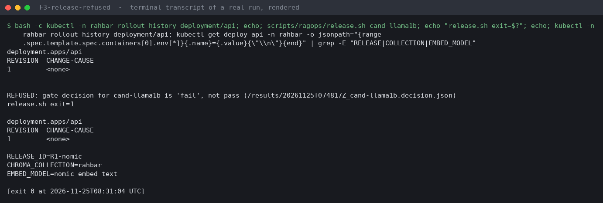
F4 Gate result changing after a ConfigMap edit:
«MEASURE: screenshot pending» (not the same as
F/F4-metrics-port-forward.txt, which is
/metrics through a port-forward).
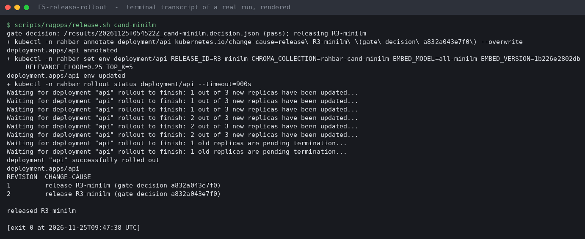
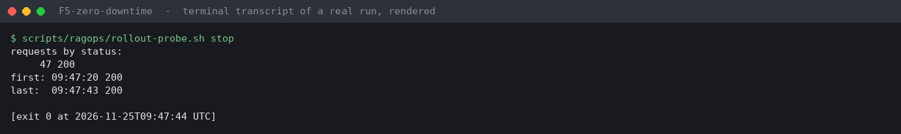
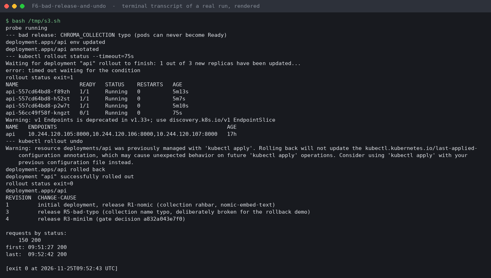
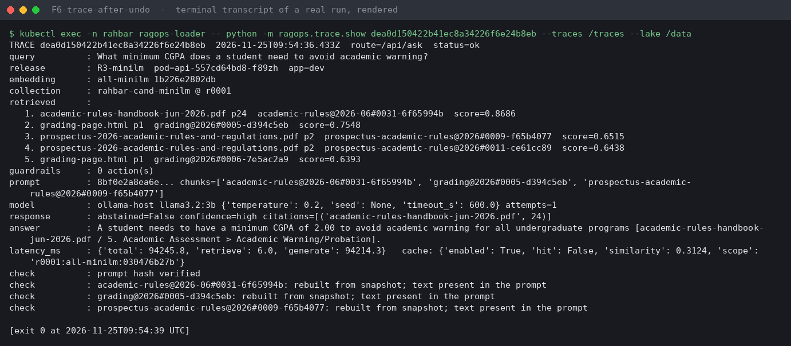